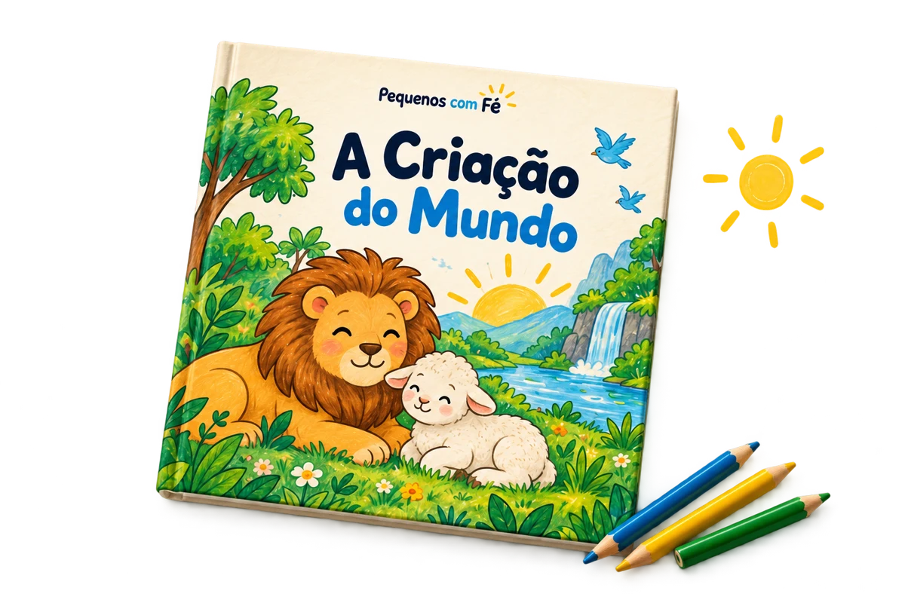

EM CASA
Fé em família
Compartilhe a fé enquanto colorem.
BÍBLIA GOODS · PEQUENOS COM FÉ
A Criação do Mundo: livro bíblico em PDF para imprimir e colorir. Em família, na escolinha ou na célula.

PDF para imprimir · Pagamento único
R$9,90 + R$0,99 de taxa
Produto digital · Total no checkout: R$10,89
UM POUQUINHO DO QUE VEM AÍ
Páginas reais do PDF. Toque para ampliar.
Desenhos em preto e branco. As próximas cores ficam por conta das crianças.
MAIS UM JEITO DE COMPARTILHAR A FÉ
Conte a história, escolha um desenho e escute as perguntas dos pequenos.
Levar essa ideia para casaA FÉ TAMBÉM SE ENSINA NO DIA A DIA
Para famílias, professores e voluntários.
EM CASA
Compartilhe a fé enquanto colorem.
NA ESCOLA DOMINICAL
Desenhos para acompanhar a Criação.
NA CÉLULA
Leve o tema bíblico para o papel.
DA COMPRA AOS LÁPIS DE COR
Finalize o pedido pelo checkout da Cakto.
Acesso por e-mail após o pagamento confirmado.
Escolha as páginas e separe os lápis.
SEU PRIMEIRO LIVRO DA COLEÇÃO
Uma atividade bíblica pronta para ganhar cores.
Produto digital. Impressão, papel e lápis não incluídos.
R$ 9,90
+ R$0,99 de taxa de serviço
Total sem complementos: R$10,89
Compra única · Produto digital
Compra processada pela Cakto
Quer mais histórias? No checkout, A Arca de Noé (R$5,90) e Colorindo com Jesus (R$6,90) são complementos opcionais, pagos separadamente.
TUDO CERTINHO ANTES DE COMEÇAR
Não. É um livro para colorir; o adulto conduz a história e a conversa.
Confirme as condições de licença e reprodução antes de usar com turmas. A compra não autoriza compartilhar ou revender o PDF.
Não. Você recebe um PDF para baixar e imprimir.
O valor de R$9,90 corresponde somente a A Criação do Mundo. Noé e Colorindo com Jesus são complementos opcionais pagos separadamente. O checkout também acrescenta R$0,99 de taxa de serviço.
O acesso chega por e-mail após o pagamento confirmado. Confira spam e promoções.
Imprima em casa ou numa gráfica. Impressão não incluída.
Veja as prévias e escolha conforme a habilidade e o interesse da criança.
Consulte os dados de atendimento do vendedor no checkout e nas informações da sua compra na Cakto.
O PRÓXIMO MOMENTO JUNTOS
Separe os lápis. Convide os pequenos.
Quero A Criação do MundoR$9,90 + R$0,99 de taxa · Total: R$10,89